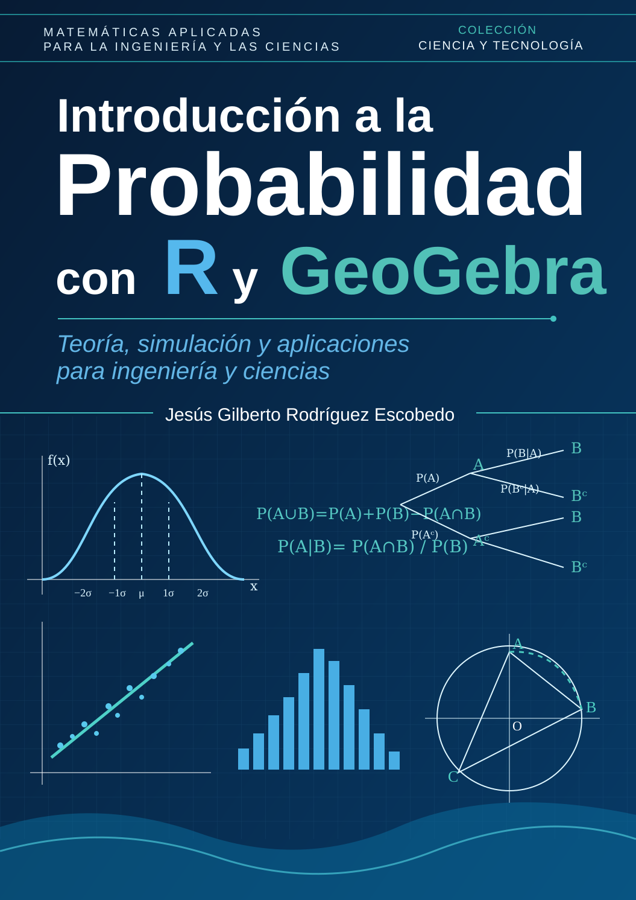

Introducción a la Probabilidad con R y GeoGebra
Teoría, simulación y aplicaciones para ingeniería y ciencias
Portada

Este libro presenta una introducción aplicada a la probabilidad mediante teoría, simulación, programación en R y actividades dinámicas con GeoGebra. Los ejemplos se sitúan en contextos de ingeniería y ciencias.
Los capítulos combinan conceptos, procedimientos, interpretación, comprobación computacional y ejercicios para favorecer un aprendizaje gradual.